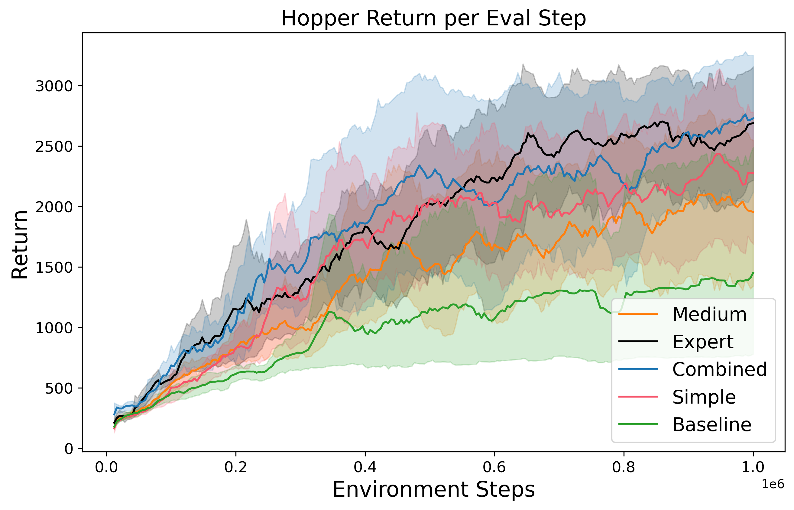
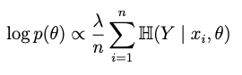
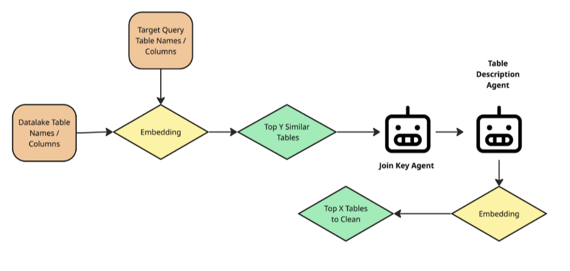
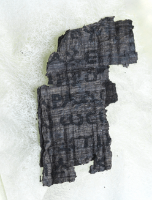

Publications

Confounding Robust Continuous Control via Automatic Reward Shaping
Research Projects

Beyond L1 & L2: Benchmarking Advanced Regularization Techniques in Neural Networks
Exploring Neural Net Regularizers beyond L1 and L2 Regularization

Agentic Table Search
Final Project for Columbia’s w6113 Class - Agentic Systems Made Real. We explored the efficacy of agentic table search vs traditional embedding search within Kitana - a data-centric system that augments a model’s performance by finding new data relevant to the target variable.
Personal Projects

xG Boosted
Forecasting win, draw, loss probabilities for upcoming international soccer games.

Vesuvius Segmentation Models
Wrote, optimized, and packaged machine learning image segmentation framework using PyTorch and NBDev for a Kaggle ML competition on detecting ink on 3D x-ray scans of scrolls. Our team finished 49th/1249, achieving a silver medal.